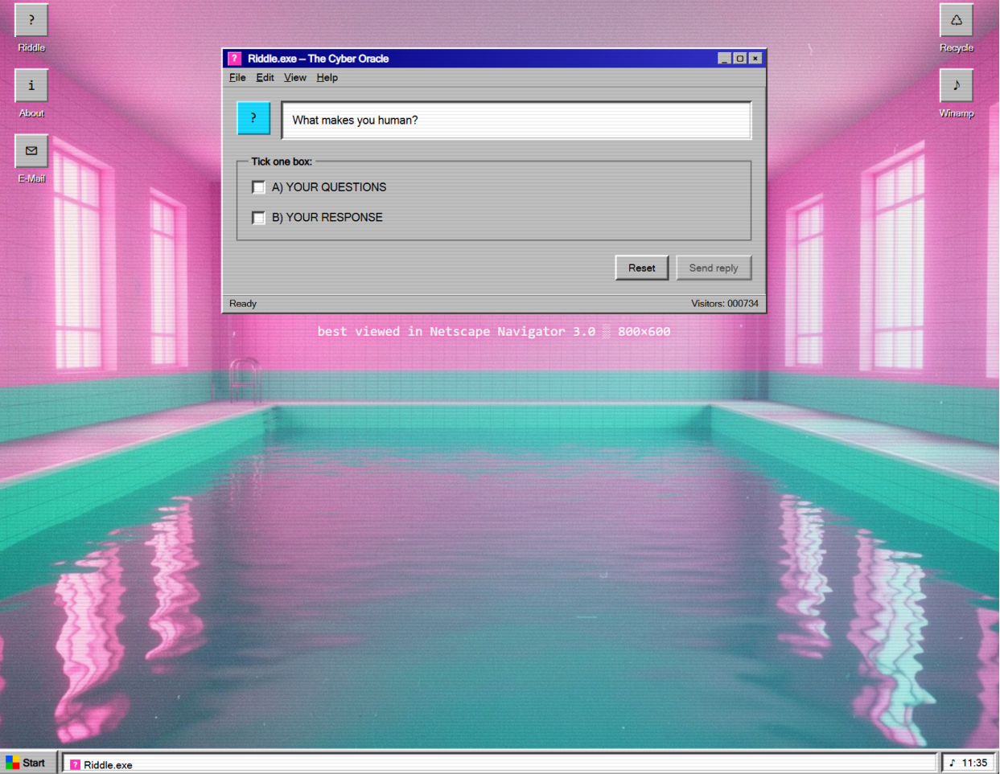

I was selected as one of fifteen creatives for an experimental dome lab course at Tekniska Museet/Wisdome, working with TouchDesigner and Ableton under mentorship by Nicole Chufi. The finished works were showcased at the Dome Dreaming festival, May 2026.
I was part of the interactive team. Our contribution introduced the use of the audience's own phones into the dome experience. Scanning the QR code brought them to a 90s Windows-style website where they could meet the cyber oracle and answer a riddle. I built the QR code integration and the website.
The group had very little time together, and the result reflects that. But the project introduced me to a genuinely new format, and the oracle got some good answers.


Scanning the QR code brought the audience to Riddle.exe — a 90s Windows-style website where they met the cyber oracle and were asked to answer a riddle. I built the QR code integration and the website.